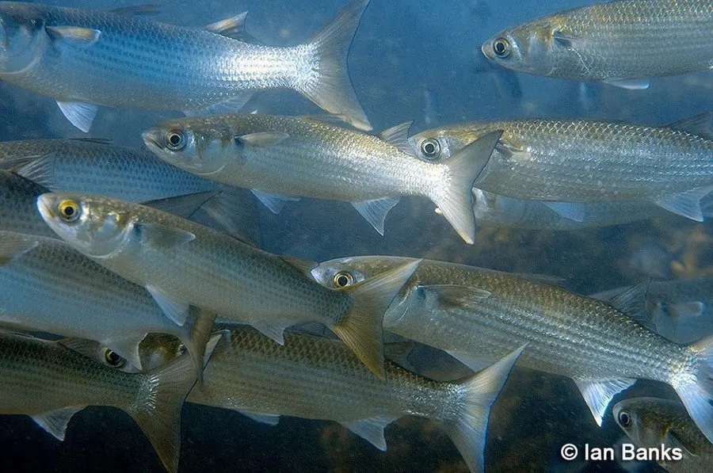

鱼类 · 动物界
鲻鱼 Mugil cephalus

全球温暖海域常见的近岸鱼类，体呈圆筒形、背鳍两个，常成群在河口和港湾活动，是重要的养殖和食用鱼。
- 分类
- 门脊索动物门纲辐鳍鱼纲目鲻形目科鲻科属鲻属
- 栖息环境
- 河口、港湾、近岸浅海和淡水水域，常成群活动
- 地理分布
- 全球温带和热带沿海，包括太平洋、大西洋和印度洋
- 保护级别
- IUCN 无危（LC）；中国未列入国家重点保护野生动物名录
物种志
鲻鱼体呈长圆筒形，头部平扁，吻部宽钝，背鳍有两个，尾鳍分叉。体色背部灰蓝或灰绿，体侧银白，体侧常有数条不明显的纵纹。成鱼体长一般 30–50 cm，最大可达 75 cm，体重 1–4 kg。
鲻鱼分布于全球温带和热带沿海，包括太平洋、大西洋和印度洋的河口、港湾和近岸水域，也能进入淡水。它是杂食性鱼类，用底部的细牙和鳃耙刮食藻类、有机碎屑和小型无脊椎动物。鲻鱼常成群活动，受惊时会跃出水面。它是全球重要的养殖鱼类，中国东南沿海有大规模的池塘养殖和混养。它的鱼卵可加工成乌鱼子，是台湾的传统海味。由于分布广、种群量大，IUCN 评估为无危。
形态与习性
- 食性杂食性，刮食藻类、有机碎屑和小型无脊椎动物
- 体长一般 30–50 cm，最大可达 75 cm
- 体重一般 1–4 kg
- 习性常成群活动，受惊时会跃出水面
- 盐度适应广盐性，能进入淡水生活
- 经济价值全球重要养殖和食用鱼，中国东南沿海大量养殖
趣味知识
- 鲻鱼是广盐性鱼类，既能在海里生活，也能进入淡水。
- 它常成群在河口觅食，受惊时会集体跃出水面。
- 鲻鱼是世界各地池塘养殖和混养的重要品种。